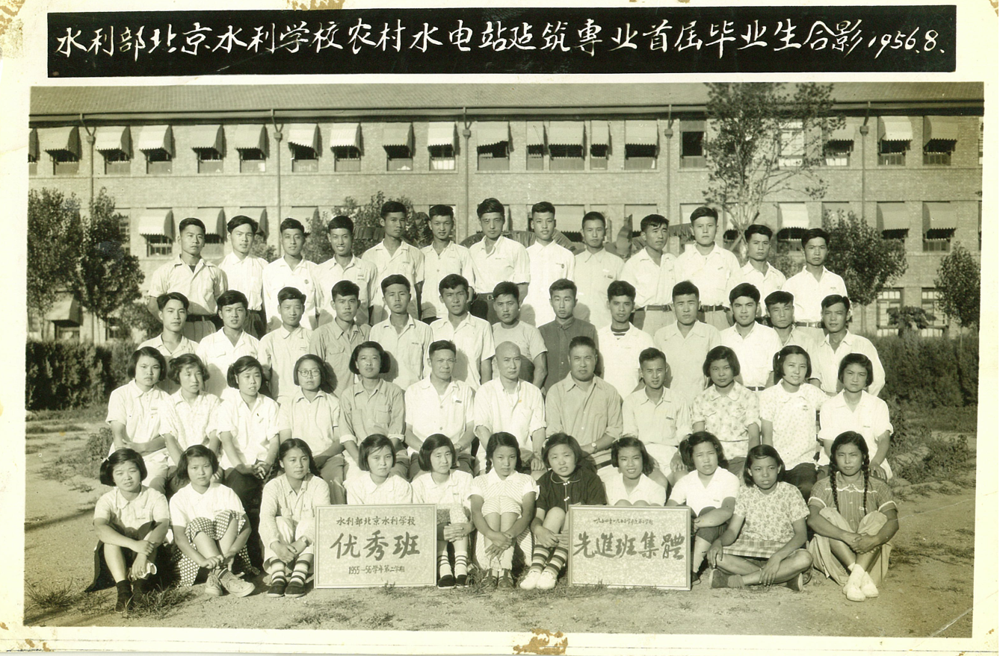
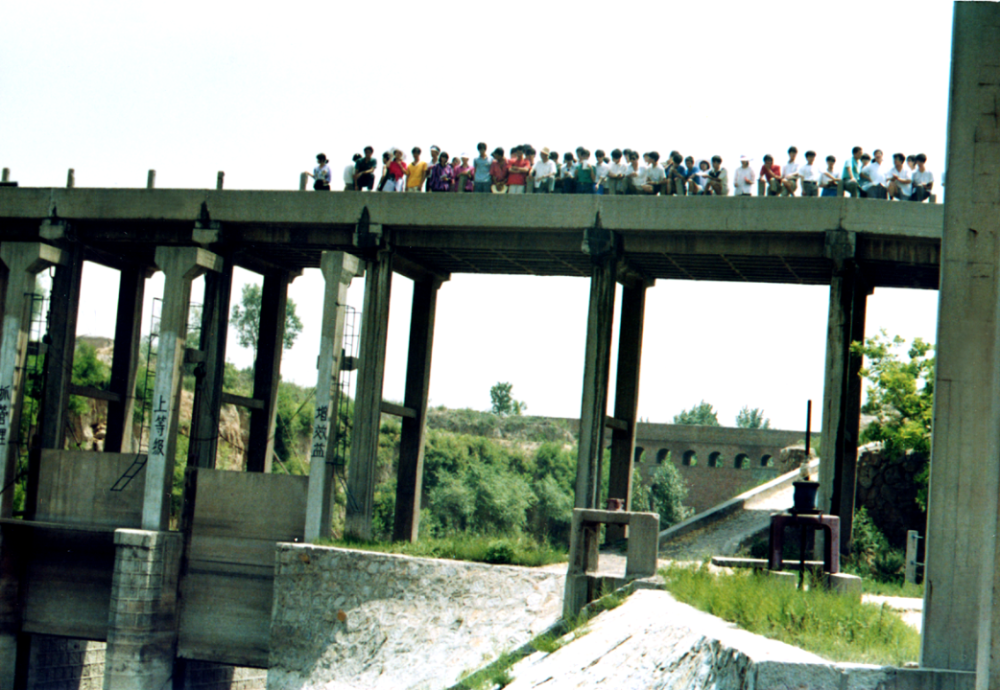
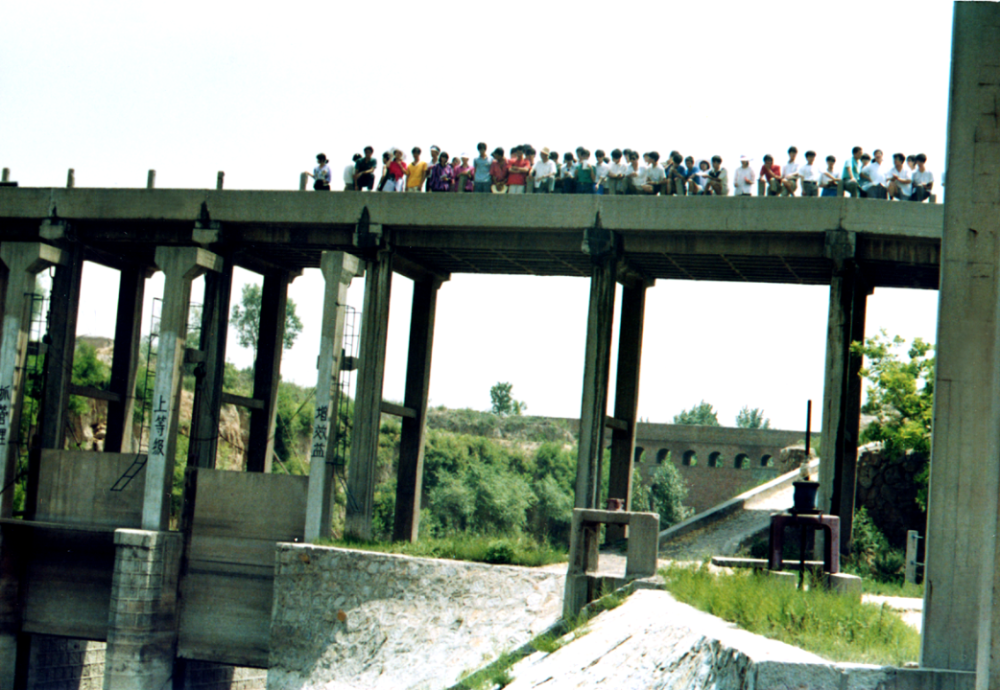
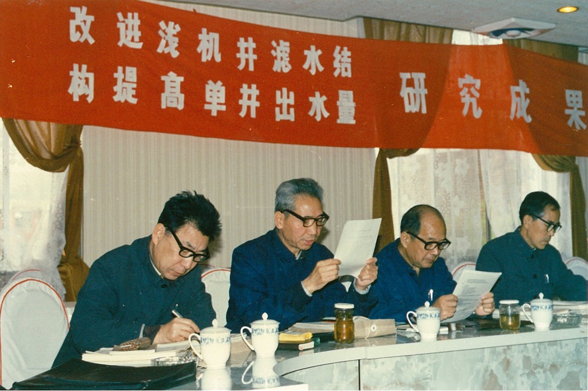

华水历史展示

因水而生 奋发有为——北京时期(1951-1969)
新中国成立伊始，水电建设亟待振兴，为此，在首任水利部部长傅作义先生的主持下，于1951年创建了北京水利学校，作为华北水利水电大学的前身，从此与共和国的水利水电建设事业结下了不解之缘。1958年10月，北京水力发电学校、北京水力发电函授学院并入北京水利学校，合并为北京水利水电学院，成为新中国培养水电建设人才的重要阵地。北京水利水电学院继承了三校的优良校风和严谨的办学传统，培养了大批优秀的水电技术人员，为新中国的水电建设事业做出了重要贡献。
新中国成立伊始，水电建设亟待振兴，为此，在首任水利部部长傅作义先生的主持下，于1951年创建了北京水利学校，作为华北水利水电大学的前身，从此与共和国的水利水电建设事业结下了不解之缘。1958年10月，北京水力发电学校、北京水力发电函授学院并入北京水利学校，合并为北京水利水电学院，成为新中国培养水电建设人才的重要阵地。北京水利水电学院继承了三校的优良校风和严谨的办学传统，培养了大批优秀的水电技术人员，为新中国的水电建设事业做出了重要贡献。
艰苦磨砺 矢志不移——岳城时期(1969-1976)
1969年10月北京水利水电学院迁至河北省磁县岳城水库办学。1970年3月20日，水利电力部将北京水利水电学院交由河北省管理，1971年1月1日，学校更名为河北水利水电学院。岳城时期是学校发展史上最为艰苦的时期。棚屋荒野,布衣蔬食，办学条件极为简陋。但学校为了国家水利水电事业的发展，仍坚持招生办学。广大教师不畏艰辛，坚守岗位，行化雨之春风,健自强之远志。带领学生下工地，勤实习；入农村，做调查；搞科研，常攻关，培养了一批高素质的人才。 
1969年10月北京水利水电学院迁至河北省磁县岳城水库办学。1970年3月20日，水利电力部将北京水利水电学院交由河北省管理，1971年1月1日，学校更名为河北水利水电学院。岳城时期是学校发展史上最为艰苦的时期。棚屋荒野,布衣蔬食，办学条件极为简陋。但学校为了国家水利水电事业的发展，仍坚持招生办学。广大教师不畏艰辛，坚守岗位，行化雨之春风,健自强之远志。带领学生下工地，勤实习；入农村，做调查；搞科研，常攻关，培养了一批高素质的人才。 

恢复调整 发奋图强——邯郸时期(1977-1989)
1977年学校从岳城迁到邯郸，办学条件得到较大改善。1978年河北水利水电学院更名为华北水利水电学院。饱经磨砺之后，全校师生员工仍以培养水利建设人才为己任，同心协力，励精图治，锐意改革。学校教学、科研工作阔步发展，取得了一批重大成果。思想政治工作卓有起色，文体活动蓬勃开展，实验设备和图书资料逐步完善，学校的各项工作都取得了可喜成绩。1990年以后，学校迁到郑州市办学，邯郸分部作为学校一部分继续招生。
1977年学校从岳城迁到邯郸，办学条件得到较大改善。1978年河北水利水电学院更名为华北水利水电学院。饱经磨砺之后，全校师生员工仍以培养水利建设人才为己任，同心协力，励精图治，锐意改革。学校教学、科研工作阔步发展，取得了一批重大成果。思想政治工作卓有起色，文体活动蓬勃开展，实验设备和图书资料逐步完善，学校的各项工作都取得了可喜成绩。1990年以后，学校迁到郑州市办学，邯郸分部作为学校一部分继续招生。
兴校强校 今日辉煌——郑州时期(1990-今)
自1990年学校迁郑办学以来，在原水电部和水利部领导的关爱下，通过学校领导和广大师生员工的共同努力，平稳地度过了边建校、边搬迁、边办学的建设过程，办学环境改善，学科建设发展迅速，科研成果斐然，学校走上了改革发展的快车道，在教学科研、行政管理、社会服务、思想政治工作、后勤社会化等方面都取得了长足的发展。办学规模和办学空间实现了新的跨跃，为学校腾飞奠定了坚实的基础。
自1990年学校迁郑办学以来，在原水电部和水利部领导的关爱下，通过学校领导和广大师生员工的共同努力，平稳地度过了边建校、边搬迁、边办学的建设过程，办学环境改善，学科建设发展迅速，科研成果斐然，学校走上了改革发展的快车道，在教学科研、行政管理、社会服务、思想政治工作、后勤社会化等方面都取得了长足的发展。办学规模和办学空间实现了新的跨跃，为学校腾飞奠定了坚实的基础。